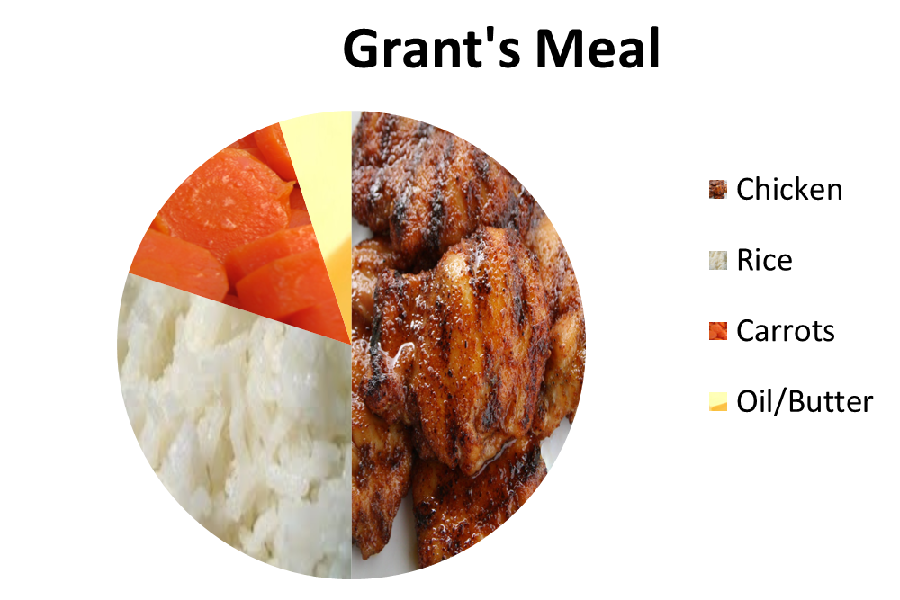
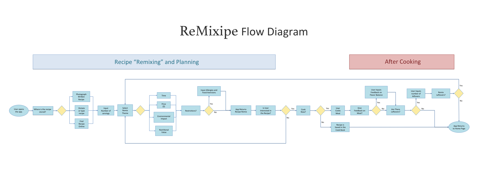

Intro
My team and I looked a dinner preparation on a stovetop. We were interested in dinner preparation, because it is a key part of most peoples' day and is connected to things as personal and complex as health and culture. After much research, we came to a surprising conclusion. We found that the embedded costs within the food itself had more of an impact than the stovetop or the energy to cook the food. With this knowledge in mind, we ended up designing an app called "ReMixipe" that helps people eat less meat without compromising flavor and reduce food waste.
Team
My team composed of three people: Aman Kapur, Anne-Marie Buchenan, and me. Aman was majoring in Engingeering with a Concentration in Computing, and Annie was majoring in Mechanical Engineering. I sourced the stove that we disassembled and handled the outreach for several interviews. Besides, that, we all shared similar design roles, participating in interviews, persona formation and idea generation.
Pain Points
We started this process by interviewing people, and developed two personas: Get 'Er Done Grant and Passionate Patricia, each with different relationships to food and perspectives on food preparation.

- Grant values: cost, efficiency, convenience
- Patricia values: quality, flavor, nutrition
Comparing the Impact of Food and the Stovetop.
To look at the energy impact of cooking food, we measured the energy draw of a stovetop while food was cooked on it. We boiled a small pot of water, cooked a few steaks, cooked some potatoes and boiled some carrots. We also purchased a stovetop on Craigslist and then took it apart and ran a Life-Cycle Assessment on it using data from the idemat database.

A part of dinner preparation is the food being prepared, so we included the impact of a meal into our calculations. The situation we were looking at was a meal including beef, veggies and some sort of starch cooked on a stove. The stove would probably be used for 13 to 20 years, and its impact was divided over the many uses in this timeframe.
What we found was that the vast majority of impact from a meal is the impact from the food cooked on the stove and not the stove itself. In other words, if you want to make cooking more sustainable, rather than designing a more energy-efficient stovetop, your time is better-spent redesigning the process by which people decide what to cook on the stovetop. This led us to look to the next stage: designing a mobile app that recommends modified recipes.
Changing the Decision-Making Process
So, how does one go about helping people make different food choices? Guilt-tripping might be the usual route for environmentalists, but we believe there's a better way. People we interviewed already have between 10 and 20 recipes that they cycle through. People cook what they cook because they know those recipes and feel comfortable with them.
We envisioned an app that helps people cook more sustainable meals by modifying the recipes. This is a viable solution because it is in line with our personas' values. Grant likes to save money, and Patricia cares about the health of her children. Conveniently, a shopper can often save money and make healthier food by reducing the meat cooked and adding other options or leaner meat. For example, chicken is cheaper than beef, it's more healthful. However, as the late Boromir might say: "one does not simply replace meat with tofu." And he's correct.
The app that we propose does more than substitute. It takes in recipes and creates a profile of the various flavor compounds in the food and how they balance each other out. When ingredients are substituted, new cooking methods and ingredients are suggested to achieve an appealing alternative. Over time, the app will collect feedback from the user to develop an understanding of the user's preferences. Like a good DJ, it feel the crowd and plays to the taste of its audience. I present: ReMixipe.
How to Use ReMixipe
- Input a recipe, verbally, via web, photo, or typing.
- Get back recipes with various remixes to see how they can be changed or scaled.
- Choose a recipe, and shopping list is generated with shopping places.
- After meal is over, recipe app suggests remixes.
How it Reduces Food Waste
Ten percent of the US energy budget goes into food production, and as much as forty percent of food produced in the US is wasted. (National Resources Defense Council, 2012) Part of the waste is food spoilage, but another aspect is food that has been prepared, but goes uneaten as leftovers. A situation faced by Patricia is that she makes a meal for her family and the leftovers are not large enough for another meal, but too large for another person's lunch. These awkwardly-sized portions are then left in the fridge to rot until disposed. This problem is solved in two ways by the app. The App scales the recipe to deliver the number of servings the user desires, and at the end of the meal the user can input the leftovers as an ingredient in a new recipe. For example, chicken breast can go into a pie, soup, or a casserole.
Individual Work on App Design
The extent of the project was to look at an activity, and using user-centered design and environmental impact analysis tools, propose a solution. The solution was only developed to the point of a list of features and considerations based on the personas developed. Independently, I decided to take this work a step further and make some initial designs for the app.
Remixipe Task Flow Diagram
Before designing the app, I analyzed the process envisioned using a flow diagram. I used sticky notes to write out decision points and steps, making several iterations on the diagram. After refinement in the mockups stage, I developed the diagram as it is on the left. What I found through making the task flow diagram is that I needed much fewer pages than initially thought, and that several pages could be used for multiple purposes. To see the diagram in greater detail, click the image to the left.
Mockups
Following the rough draft of the task flow on sticky notes, I developed mockups on pieces of paper. Translating them into paper format allowed me to quickly iterate on features and the organization of steps in the task flow. After satisfied with the organization of steps, I translated these paper mockups into mockups in Balsamiq. This iteration allowed me to think more about the spacing of features and how to compress them into the iPhone screen. I organized the app into four main steps: Input, Remix, Cook and Review. Click on the mockups to see them in greater detail with features highlighted.
Input

People store recipes and find them in a variety of ways, so the Input set of pages was designed to allow users to input recipes from a range of sources. Is the recipe stored on old recipe cards in Passionate Patricia's cabinet? Then she can take a photo of the card, and it will be stored in the app. If Get 'er Done Grant is unsure of what he wants, but has an idea, he can search online and input a recipe that way.
Remix

People value different things in their meals, and the Remix page was designed to accommodate this. Users can choose between remixing their meal based on price, environmental impact, healthfulness and preparation time. Fortunately for the purposes of this app, three of the four metrics generally coincide with decreased environmental impact. For example, decreasing the cost of meals and increasing the nutritional value of them can be accomplished by reducing meat consumption while increasing the number of vegetables.
More themes on which to remix foods were considered, but based on Grant's desire for simplicity and affordability and Patricia's emphasis on nutritional value, these themes should be sufficient.
Cook

The Cook Page allows users both do three things: Cook the recipe, save the recipe for later, and reject the current recipe to try a different remix theme.
Passionate patricia has difficulty with technology, so I wanted to avoid the possibility of misclicks and reduce the amount of navigation. To do this, steps and ingredients were included on the same page. An added benefit of this is that with them on the same page, the user can easily see the relationship between them.
Review

The review page allows users to give feedback on the flavor balance of the meal, rate the meal, and if there are leftovers make a new remix with them. The feedback on the flavor balance and overall rating are optional, but I made the number of leftovers not optional. From interviews, we found that much of the food waste post-purchase happens when someone makes too much food and then those leftovers go uneaten. For this reason, I consider the number of leftover servings an important piece of feedback to give to the app, with the idea the app will know how to properly scale servings in the future.
Future Work
These are mockups and are useful for initial idea exploration, but with any iteration, they could be improved. Questions remain surrounding whether Passionate Patricia and Get 'Er Done Grant would actually use the app. If they do not, what are reasons they choose not to? I made efforts to reduce the amount of steps where the user is in the process at all times. However, this process may still feel like too many steps or too confusing compared to usual cooking. Passionate Patricia usually cooks from her head, not using a recipe, so this app needs to make a compelling enough reason to become part of her routine. We might be able to take cues from other apps that people have incorporated into their lives. Grant just wants to cook something, and inputting a recipe then remixing it adds additional steps. Grant finds the majority of his recipes online, so perhaps for Grant the ReMixipe app makes more sense as a web browser plugin for when he looks up recipes online. Perhaps, we might take a cue from the Internet of things movement and incorporate the app into the stovetop itself? These questions and more would need to be investigated in codesign sessions with the users, but regardless of the best solution, the insights gained through this process will surely be of value.